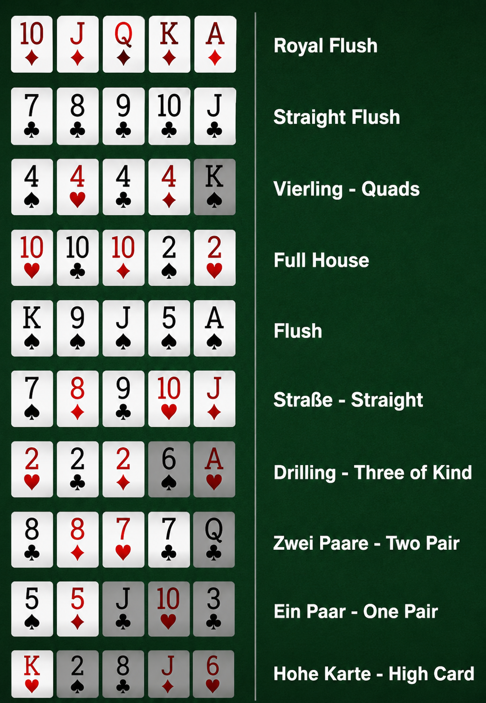

Poker wird meist mit einem Kartendeck aus 52 Karten gespielt. Jeder Spieler erhält Karten, die je nach Variante offen oder verdeckt ausgeteilt werden. Anschließend folgen mehrere Wettrunden, in denen die Spieler entscheiden können, ob sie setzen, erhöhen, mitgehen oder aussteigen.
Die wichtigsten Aktionen sind:
- Check: Kein Einsatz, die Runde wird fortgesetzt.
- Bet: Einen Einsatz machen.
- Call: Einen Einsatz mitgehen.
- Raise: Den Einsatz erhöhen.
- Fold: Die Karten aufgeben und die Hand verlassen.
Beim beliebten Texas Hold'em erhält jeder Spieler zwei verdeckte Karten. Zusätzlich werden fünf Gemeinschaftskarten in die Mitte des Tisches gelegt. Aus diesen sieben Karten müssen die Spieler die bestmögliche Kombination aus fünf Karten bilden.
Der Spieler mit der stärksten Hand gewinnt am Ende der Runde den Pot, sofern nicht alle anderen Spieler vorher ausgestiegen sind.
Die Reihenfolge der Pokerhände von stark nach schwach:
